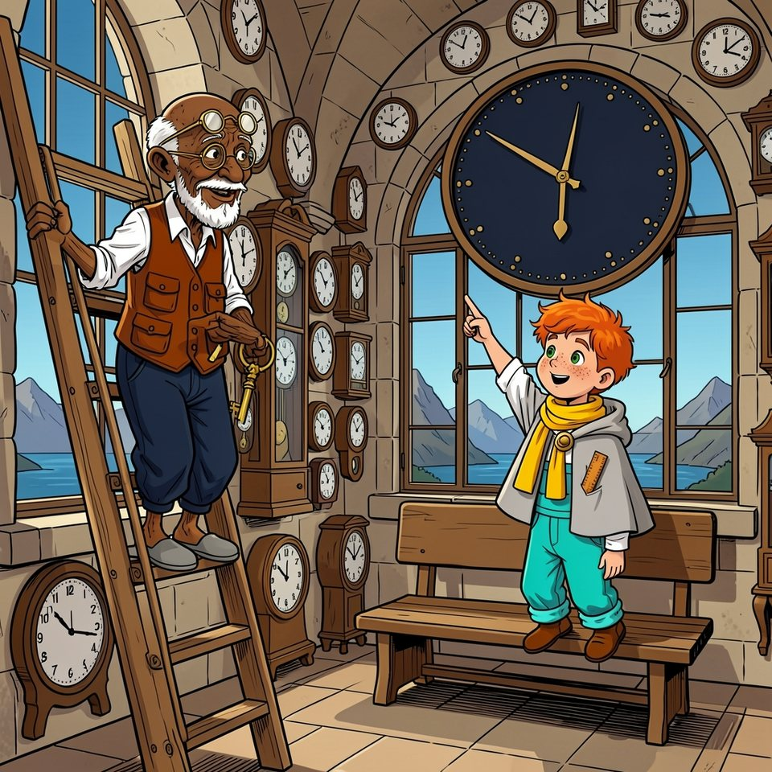

Titistoire › Les Galaxies (8-10 ans)
Quatre-vingt-dix-sept horloges
Haute-Lanterne, épisode 3 sur 8 : un feuilleton à énigmes dans un vieux château-phare au milieu d'un lac.

▶ Écouter et regarder l'histoire
Gratuit, sans inscription : la voix lit, le texte suit mot à mot, les images tournent comme dans un album.
Le texte de l'histoire
Le matin du vingt, six élèves de Haute-Lanterne descendirent au thé avec des chaussures fraîchement cirées et des cernes jusqu'aux joues. La veille, dans le couloir des jours impairs, ils avaient réuni les deux moitiés de la carte. La barque d'encre était passée d'une moitié sur l'autre. Puis minuit avait sonné, et chacun s'était réveillé dans son lit.
« Rendez-nous notre barque, attaqua Elias, par-dessus le Trait et la marmelade. — Elle n'est pas à vous. Elle est partie. On ne retient pas une barque qui s'en va. — Règle numéro un : une barque du Levant rentre au Levant. — Dis-le-lui », répliqua Kenza. Tom, pour une fois, ne suivait pas la dispute. Il regardait le mur des horloges, tout en haut.
« Elle a bougé. » On se tut des deux côtés. « L'horloge de personne. Le dix-sept, son aiguille était avant le premier cran. Ce matin, elle a passé le troisième. J'ai compté. » C'était le premier des quatre signes de la carte : une horloge à une seule aiguille. Et voilà qu'elle marchait, elle qui n'avait jamais bougé.
Maître Idris chaussa ses lunettes, monta sur son échelle, redescendit. « Soixante ans que je la remonte chaque semaine, déclara-t-il sans s'émouvoir. Je suis heureux d'apprendre que cela sert à quelque chose. — Et elle donne l'heure de quoi ? demanda Maya. — Ah, cela. Je n'en ai pas la moindre idée. » Il en paraissait enchanté.
Ce jour-là, la leçon de lecture des heures eut lieu sous le mur des horloges. « Pour savoir de quoi une horloge donne l'heure, commença Maître Idris, on ne regarde pas l'horloge. On regarde ce qui arrive quand elle sonne. » La pendule dorée sonna. La porte s'ouvrit, et Miss Ada entra avec la théière. « L'heure du thé », traduisit-il.
Une pendule à gros ventre tinta trois fois. Dans la cour, la pluie se mit à tomber. « L'heure de la pluie. Elle sonne beaucoup. Quant à la petite verte… » La petite verte sonna. Maître Idris s'endormit debout, au milieu de sa phrase, sa clé à la main. Les élèves attendirent poliment. Cela dura quatre minutes. Tom les compta.
« … c'est l'heure de ma sieste, acheva-t-il en rouvrant les yeux. Des questions ? — Il n'y a que quatre-vingt-dix-sept horloges, objecta Tom. — Il y en a cent. — Quatre-vingt-dix-sept. — Cent. Recompte. » Entre eux, à un barreau de l'échelle, pendait une lanterne allumée. Elle ne pâlit ni pour l'un ni pour l'autre. Nour le remarqua. Nour remarquait tout.
Restait l'horloge de personne. Elle ne sonnait jamais. Elle avançait d'un cran, voilà tout, et toujours quand nul ne la regardait. « La nuit, conclut Kenza. Il faut la veiller, et regarder ce qui arrive. — Le Levant veillera, décida Elias. C'est notre mur. — Votre mur ? Le Trait passe au milieu. » On ne s'entendit pas. On ne s'entendait jamais.
Ce soir-là, trois Levants se cachèrent sous la table du thé, avec une lanterne, une couverture et un reste de pain grillé. Au Levant, le soleil entre par la fenêtre dès l'aube : on se lève avant tout le monde, et c'est leur fierté. Ils se couchent aussi avant tout le monde, et de cela ils se vantent moins. Maya tint jusqu'à neuf heures. Elle racontait une histoire, et s'endormit avant la fin.
Elias tint jusqu'à neuf heures et demie, assis très droit. Il s'endormit assis très droit. Tom, lui, avait un moyen sûr de rester éveillé : il comptait les tic-tac. Au cinq millième, tout rond, sa tête toucha la couverture.
Ce fut la cloche du matin qui les réveilla. Là-haut, l'aiguille avait passé un cran de plus. « Le quatrième, gémit Tom. Et je n'ai rien vu. » Kenza se tenait au bord du Trait, les bras croisés, parfaitement réveillée. « Voilà le sommeil le mieux gardé depuis trois cents ans. Elle a bougé peu après onze heures. Je passais. »
« Tu passais ? À onze heures du soir ? — Au Couchant, on a le soleil du soir dans la fenêtre : on veille tard. C'est même notre fierté. — Et qu'est-il arrivé, quand elle a bougé ? » Kenza perdit un peu de sa hauteur. « Rien. J'ai regardé partout dans la salle. Rien du tout. » Sami leva un doigt, sans lever la tête. « Alors c'est que ça n'arrive pas dans la salle. Tadam. »
Il fallait donc deux postes : un dans la salle, pour voir l'aiguille ; un dehors, pour voir le reste. Et il fallait des gens réveillés à onze heures du soir. Elias regarda le plafond. Kenza regarda ses ongles. « Le Couchant veillera dedans, finit-elle par accorder. — Le Levant veillera dehors. Sous la pluie, on ne s'endort pas. » Ce fut tout le traité.
Tom régla le reste. Quand l'aiguille bougerait, Nour lèverait sa lanterne à la grande fenêtre. Dehors, les Levants regarderaient partout à la fois : le lac, le ciel, les toits. « Et la pelouse, ajouta Maya. — On ne marche pas sur la pelouse », rappela Elias, scandalisé. Zora la tondait aux ciseaux.
À l'heure du thé, Miss Ada fit tinter sa cuillère. « Le premier du mois prochain, Haute-Lanterne aura trois cents ans, jour pour jour. Il y aura une cérémonie, et l'on astiquera les cuivres. Tous les cuivres. » Kenza se redressa. Trois cents ans : c'était son nombre. Elle n'avait jamais songé qu'il pouvait tomber un jour précis.
L'après-midi, sur le banc du Trait, Sami donna à Tom une leçon de sieste. « Tu fermes les yeux. Tu ne comptes rien. — Rien du tout ? — Rien. » Tom ferma les yeux. Il tint onze secondes. « J'ai compté que je ne comptais pas. — Tu es un cas difficile », soupira Sami. Mais il lui prêta un coin de son coussin, et ce coussin-là, il ne le prêtait à personne.
La nuit du vingt et un, il plut finement, comme il convenait. Sur la terrasse, trois Levants attendaient sous deux parapluies, le nez en l'air. Devant eux s'étendait la pelouse, carrée, parfaite, interdite. C'était de son milieu qu'on voyait le mieux la tour. Elias se tenait au bord, les orteils contre l'herbe, penché comme un plongeur qui n'ose pas.
Dans la salle des Horloges, Kenza fixait l'aiguille sans battre des cils. Nour tenait la lanterne, près de la grande fenêtre. Sami gardait le coussin. Onze heures sonnèrent. « Elle va bouger, souffla Kenza. — Comment le sais-tu ? — Je ne le sais pas. Je le lui ordonne. »
L'aiguille obéit. Elle trembla, puis sauta d'un cran. Nour leva sa lanterne contre la vitre. Dehors, Tom vit le signal. « Maintenant ! Regardez partout ! » Maya regarda le lac. Elias regarda les toits. Tom, lui, courut droit au milieu de la pelouse, et leva la tête.
Tout en haut de la tour, la Grande Lanterne cligna. Une fois, comme un œil fatigué. Quand elle se rouvrit, elle était un peu plus pâle. « C'est elle ! cria Tom. Elle a baissé en même temps que l'aiguille ! Zéro seconde d'écart ! — Tom, articula Elias d'une voix blanche. Tes pieds. »
Tom regarda ses pieds. Ils étaient sur la pelouse. Trois cents ans d'herbe jamais foulée, et deux petites bottes au milieu. Il revint sur la pointe des orteils, en posant chaque pas dans le précédent. « Quatorze pas. Sept dans chaque sens. On ne verra que sept trous. » Maya trouva que c'était, en effet, beaucoup mieux.
Ils se retrouvèrent tous les six sous l'horloge de personne, trempés d'un côté du Trait, secs de l'autre. « Elle donne l'heure de la Grande Lanterne, annonça Tom. Chaque nuit, un cran. À chaque cran, la Lanterne baisse. — Dans le temps, on la voyait de la rive, se souvint Nour. C'est Zora qui me l'a appris, le premier matin. »
Tom compta les crans, le doigt tendu. « Quinze. Le premier, la nuit du dix-sept. Celui de ce soir est le cinquième. Il en reste dix. Dix-huit, dix-neuf, vingt… » Il alla jusqu'au bout, sur ses doigts, puis sur ceux de Sami, qui les prêta sans se réveiller. « Le dernier cran tombe la nuit du trente et un. »
« Et après le dernier cran ? » demanda Maya. Personne ne répondit. Après le dernier cran, il n'y avait plus de cran. « Imagine, reprit-elle tout bas. Elle s'éteint. » Pour une fois, nul ne lui reprocha d'inventer. Sans la Grande Lanterne, la Luciole ne trouverait plus le rocher dans le brouillard.
« Le trente et un, répéta lentement Kenza. Et le lendemain, Haute-Lanterne a trois cents ans. Jour pour jour. » On avait allumé la Grande Lanterne trois cents ans plus tôt, et elle s'éteindrait dans dix nuits. Elle avait duré ce qu'elle devait durer.
Une porte s'ouvrit. Miss Ada traversa la salle en robe de chambre, une tasse à la main. « Bonsoir. Je ne vous ai pas vus. Vous, en revanche, vous allez voir vos lits. » Elle n'avait pas élevé la voix. Elle ne l'élevait jamais.
On monta se coucher sans se souhaiter bonne nuit d'une aile à l'autre. Mais on monta en même temps, ce qui ne s'était jamais fait. Dans l'escalier, Elias demanda : « Une lanterne qui s'éteint, ça se rallume ? — Avec une vérité, répondit Nour. — Celle-là a trois cents ans. Il lui faudrait une vérité de sa taille. »
Kenza s'arrêta sur une marche. « Les fondateurs l'ont allumée. Ils savaient donc comment, et ils l'ont sûrement laissé quelque part. — Le deuxième signe, rappela Tom. Un livre fermé par deux sangles. — À la bibliothèque, tous les livres ont une sangle, objecta Maya. Il y en a des milliers. — Quatre mille deux cent seize. À une sangle chacun. Je n'en ai jamais vu à deux. »
Cette nuit-là, les vérités du soir furent brèves. Au Perchoir, Tom avoua : « J'ai marché sur la pelouse. » Sa lanterne s'alluma, et il se sentit beaucoup mieux. Elias déclara : « Je n'ai rien vu. Je regardais les toits. » Maya chercha longtemps, puis : « Cette fois, je n'ai rien inventé. Ça me fait tout drôle. »
À la Tanière, Sami annonça qu'il était fatigué, et sa lanterne s'alluma, comme tous les soirs. Kenza prononça : « Le Levant a trouvé quelque chose avant moi. » La flamme vint, toute droite ; Kenza en parut vexée. Puis elle se tourna vers le troisième lit. « Tu as bien tenu la lanterne. » Ce n'était pas une vérité du soir. C'était presque un bonsoir.
Nour remercia. Elle faillit ajouter que c'était très gentil, et se retint à temps, à cause de la flamme. « J'ai aimé cette soirée », dit-elle à la place. Sa lanterne s'alluma si vite qu'elle en resta surprise. C'était donc vrai. Elle n'avait pas pensé à sa valise de toute la journée.
Dehors, sur la pelouse, sept petits trous se remplissaient de pluie. Dans la tour, quatre mille deux cent seize livres dormaient, sanglés, et un autre peut-être, que nul n'avait jamais compté. Où cache-t-on un livre à deux sangles, quand tous les autres n'en ont qu'une ? Dans la salle des Horloges, l'horloge de personne ne bougea plus de la nuit : elle avait donné son cran. Il en restait dix.
Épisode suivant : Le livre sans titre